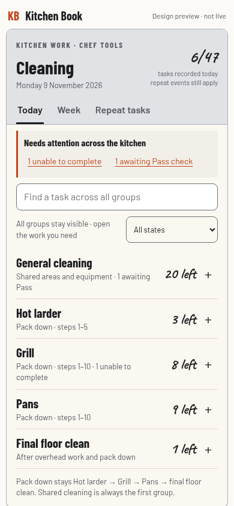
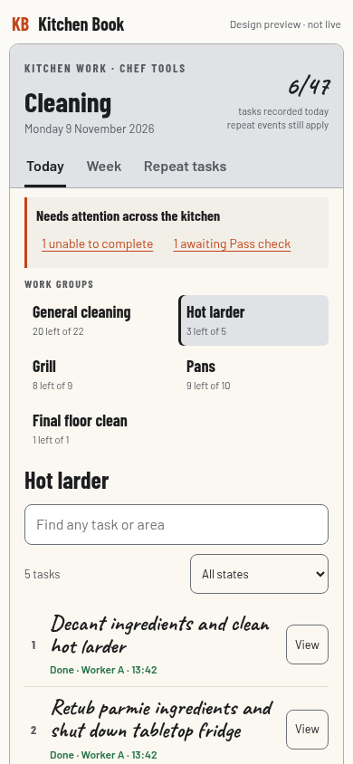
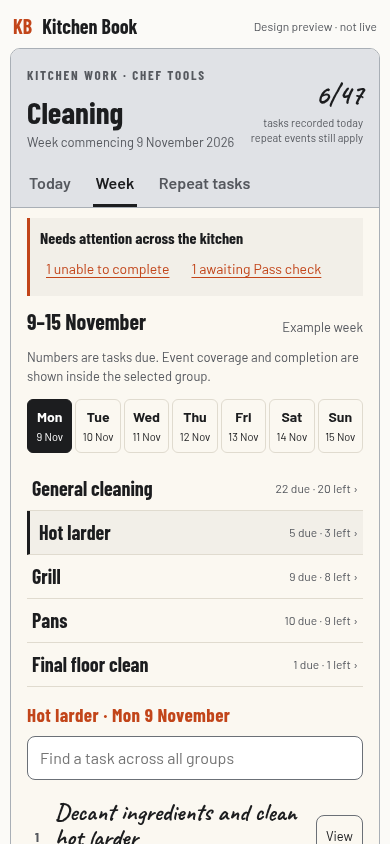
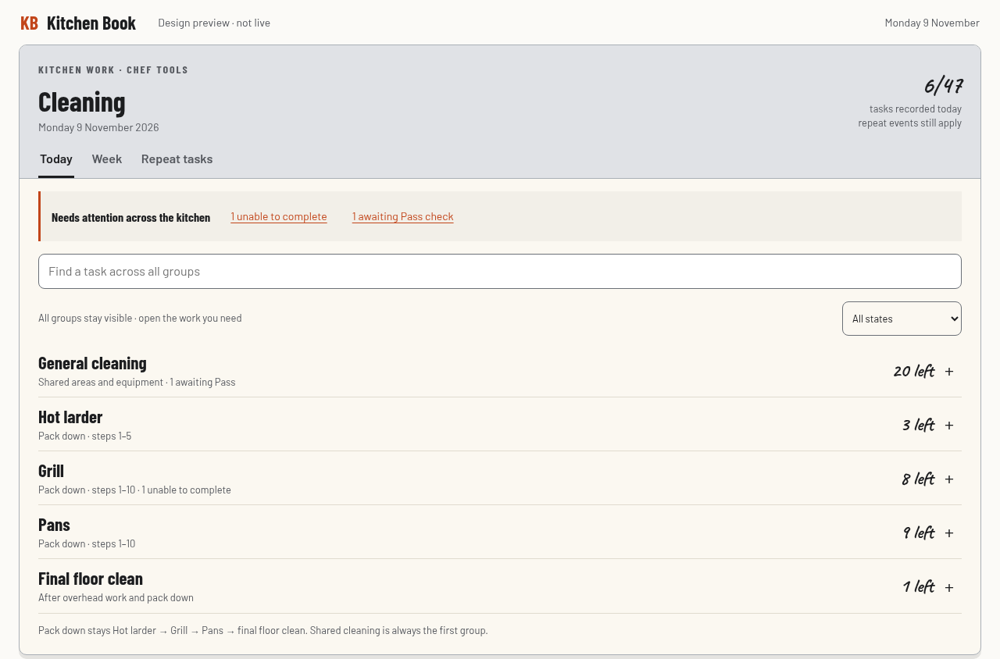
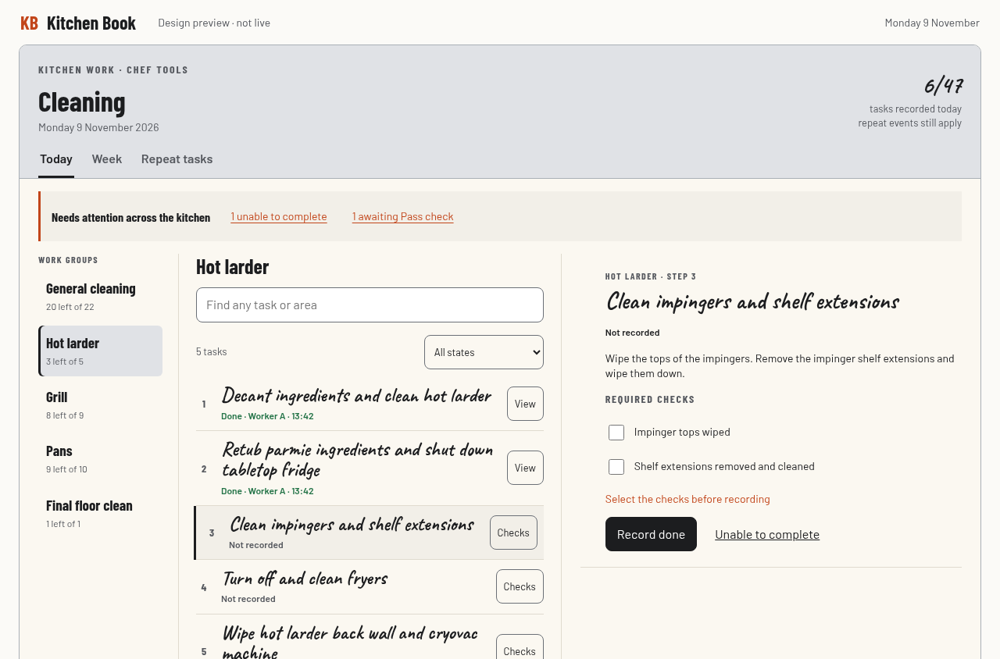
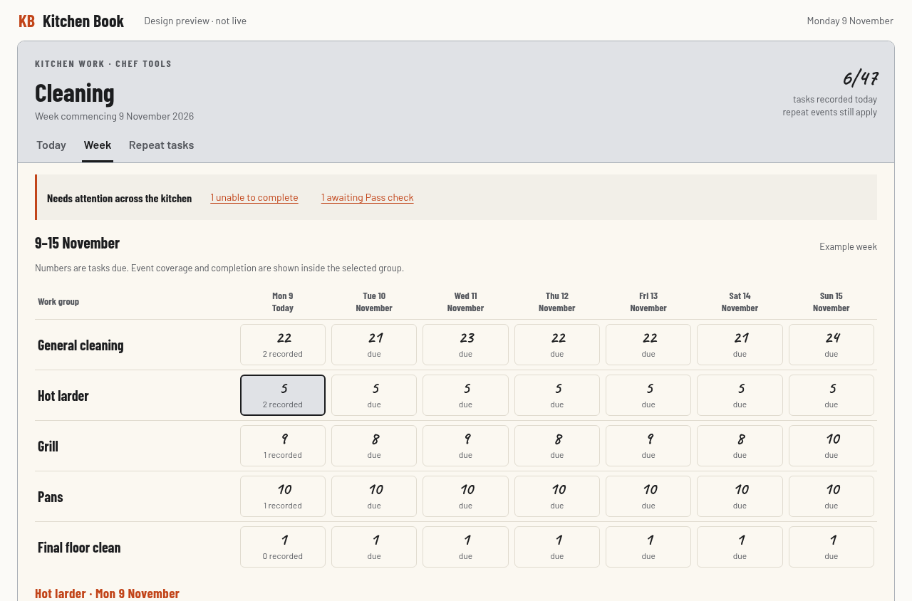

Same task programme. Three different ways to find, review and manage it. Interactive concepts use example progress.
Five folds, one small checklist at a time.
Least change. Recommended.

Groups, a short task list and one detail pane.
Best for reviewing and editing methods.

Five group rows across the week.
Best for planning and weekly review.




Local design previews only. Full tradeoffs, baseline and verification are in the brief.